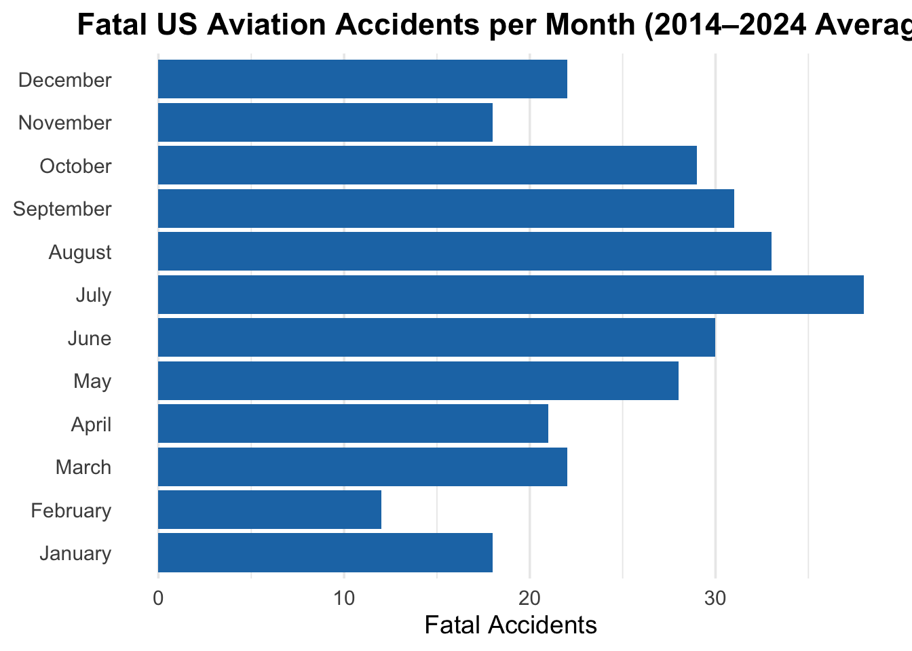
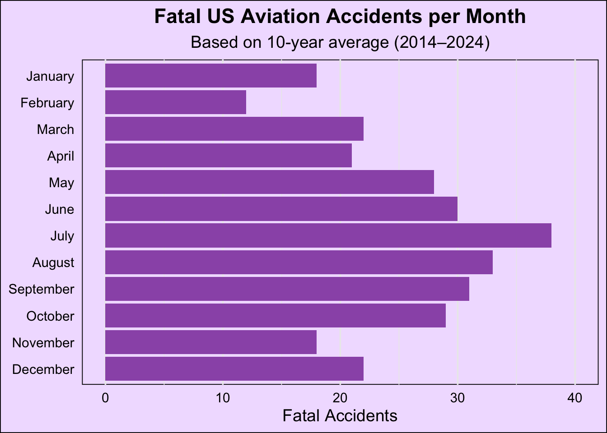
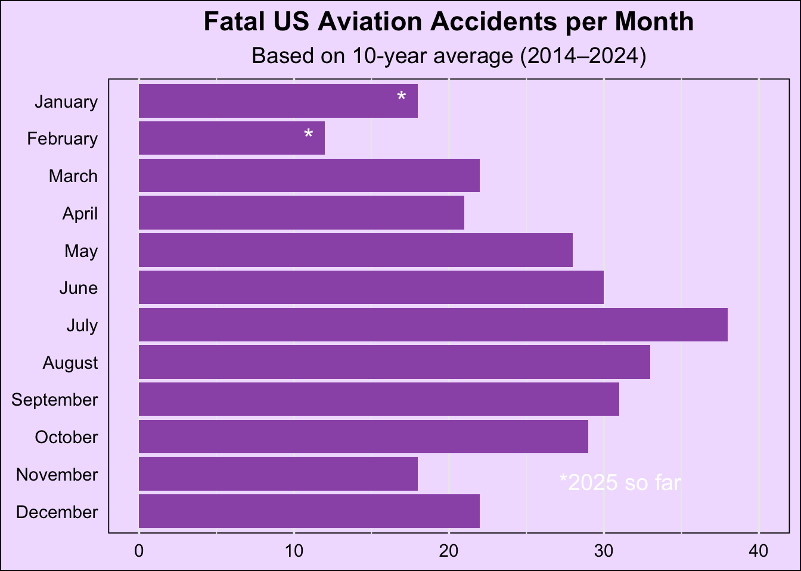
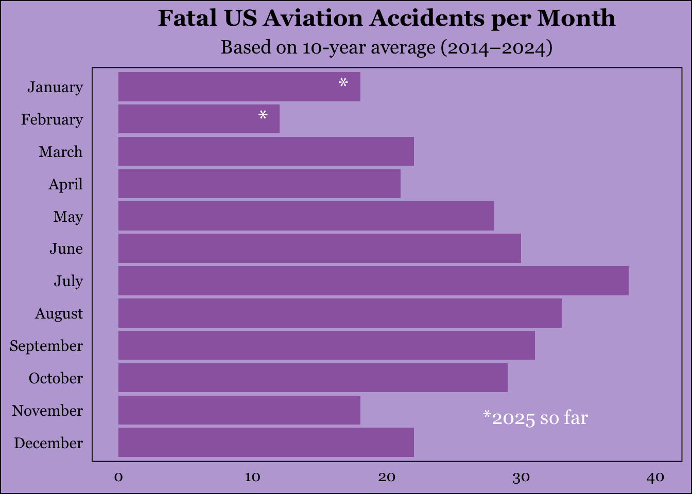

knitr::include_graphics("/Users/alexisgonzalez/Desktop/Screenshot 2025-05-01 at 6.39.18 PM.png")
I found a graphic on the gaurdian that shows the 10 year average number of aviation accidents per month. The Guardian did not provide the data source so I extracted it using WebPlotDigitizer. The articel can be found here https://www.theguardian.com/us-news/2025/mar/01/plane-crash-safety-data
Here is the graph I wil be replicating
knitr::include_graphics("/Users/alexisgonzalez/Desktop/Screenshot 2025-05-01 at 6.39.18 PM.png")

#Loadpackages
library(here)here() starts at /Users/alexisgonzalez/Desktop/MADA/alexisgonzalez-MADA-portfoliolibrary(dplyr)
Attaching package: 'dplyr'The following objects are masked from 'package:stats':
filter, lagThe following objects are masked from 'package:base':
intersect, setdiff, setequal, unionlibrary(knitr)
library(ggplot2)#Loading the dataset
aviation <- read.csv("/Users/alexisgonzalez/Desktop/MADA/alexisgonzalez-MADA-portfolio/presentation-exercise/Aviation_data.csv")summary(aviation) Dec X23.68055556
Length:11 Min. :19.79
Class :character 1st Qu.:22.01
Mode :character Median :30.69
Mean :27.60
3rd Qu.:31.32
Max. :37.99 str(aviation)'data.frame': 11 obs. of 2 variables:
$ Dec : chr "Nov" "Oct" "Sep" "Aug" ...
$ X23.68055556: num 21.5 31 30.7 34.4 38 ...#I asked chat gpt "give me the code to recreate this graph" and here is the output
# Load required library
library(ggplot2)
# Your extracted data
aviation_data <- data.frame(
Month = c("January", "February", "March", "April", "May", "June",
"July", "August", "September", "October", "November", "December"),
Fatal_Accidents = c(18, 12, 22, 21, 28, 30, 38, 33, 31, 29, 18, 22)
)
# Reorder months so they appear from January to December
aviation_data$Month <- factor(aviation_data$Month, levels = aviation_data$Month)
# Create the horizontal bar plot
ggplot(aviation_data, aes(x = Fatal_Accidents, y = Month)) +
geom_bar(stat = "identity", fill = "#1f77b4") + # Nice blue color
labs(
title = "Fatal US Aviation Accidents per Month (2014–2024 Average)",
x = "Fatal Accidents",
y = "Month"
) +
theme_minimal(base_size = 14) +
theme(
plot.title = element_text(hjust = 0.5, face = "bold"), # center title
axis.title.y = element_blank(), # remove y-axis label
panel.grid.major.y = element_blank() # clean up gridlines horizontally
)
#So a few things are off here, the color, the order, and I need a subtitle that says “based on 10 year average(2014-2024). I will fix those first and then work on the astricks on jan and feb.
# Load required library
library(ggplot2)
# Your extracted data
aviation_data <- data.frame(
Month = c("January", "February", "March", "April", "May", "June",
"July", "August", "September", "October", "November", "December"),
Fatal_Accidents = c(18, 12, 22, 21, 28, 30, 38, 33, 31, 29, 18, 22)
)
# Reorder months so January is at the top
aviation_data$Month <- factor(aviation_data$Month, levels = rev(aviation_data$Month))
# Create the horizontal bar plot with light purple background and black text
ggplot(aviation_data, aes(x = Fatal_Accidents, y = Month)) +
geom_bar(stat = "identity", fill = "#9b59b6") + # Nice purple color
labs(
title = "Fatal US Aviation Accidents per Month",
subtitle = "Based on 10-year average (2014–2024)",
x = "Fatal Accidents",
y = NULL
) +
theme_minimal(base_size = 14) +
theme(
plot.title = element_text(hjust = 0.5, face = "bold", color = "black"), # Black title text
plot.subtitle = element_text(hjust = 0.5, color = "black"), # Black subtitle text
axis.title.x = element_text(color = "black"), # Black x-axis title
axis.text.x = element_text(color = "black"), # Black x-axis text
axis.text.y = element_text(color = "black"), # Black y-axis text
panel.grid.major.y = element_blank(), # Remove horizontal gridlines
panel.background = element_rect(fill = "#f1e0ff"), # Light purple background
plot.background = element_rect(fill = "#f1e0ff") # Light purple background for the whole plot
) +
xlim(0, 40) # Set x-axis limit to go up to 40
Now that it looks correct I can focus on adding the additional words, I looked it up online and the annotate function should work
# Load required library
library(ggplot2)
# Your extracted data
aviation_data <- data.frame(
Month = c("January", "February", "March", "April", "May", "June",
"July", "August", "September", "October", "November", "December"),
Fatal_Accidents = c(18, 12, 22, 21, 28, 30, 38, 33, 31, 29, 18, 22)
)
# Reorder months so January is at the top
aviation_data$Month <- factor(aviation_data$Month, levels = rev(aviation_data$Month))
# Create the horizontal bar plot with light purple background and black text
ggplot(aviation_data, aes(x = Fatal_Accidents, y = Month)) +
geom_bar(stat = "identity", fill = "#9b59b6") + # Nice purple color
labs(
title = "Fatal US Aviation Accidents per Month",
subtitle = "Based on 10-year average (2014–2024)",
x = "Fatal Accidents",
y = NULL
) +
theme_minimal(base_size = 14) +
theme(
plot.title = element_text(hjust = 0.5, face = "bold", color = "black"), # Black title text
plot.subtitle = element_text(hjust = 0.5, color = "black"), # Black subtitle text
axis.title.x = element_text(color = "black"), # Black x-axis title
axis.text.x = element_text(color = "black"), # Black x-axis text
axis.text.y = element_text(color = "black"), # Black y-axis text
panel.grid.major.y = element_blank(), # Remove horizontal gridlines
panel.background = element_rect(fill = "#f1e0ff"), # Light purple background
plot.background = element_rect(fill = "#f1e0ff") # Light purple background for the whole plot
) +
xlim(0, 40) + # Set x-axis limit to go up to 40
annotate("text", x = 35, y = 2, label = "*2025 so far", color = "white", hjust = 1, vjust = 1, size = 5)Now I can add the * to the bars
# Load required library
library(ggplot2)
# Your extracted data
aviation_data <- data.frame(
Month = c("January", "February", "March", "April", "May", "June",
"July", "August", "September", "October", "November", "December"),
Fatal_Accidents = c(18, 12, 22, 21, 28, 30, 38, 33, 31, 29, 18, 22)
)
# Reorder months so January is at the top
aviation_data$Month <- factor(aviation_data$Month, levels = rev(aviation_data$Month))
# Create the horizontal bar plot with light purple background and black text
ggplot(aviation_data, aes(x = Fatal_Accidents, y = Month)) +
geom_bar(stat = "identity", fill = "#9b59b6") + # Nice purple color
labs(
title = "Fatal US Aviation Accidents per Month",
subtitle = "Based on 10-year average (2014–2024)",
x = NULL,
y = NULL
) +
theme_minimal(base_size = 14) +
theme(
plot.title = element_text(hjust = 0.5, face = "bold", color = "black"), # Black title text
plot.subtitle = element_text(hjust = 0.5, color = "black"), # Black subtitle text
axis.title.x = element_text(color = "black"), # Black x-axis title
axis.text.x = element_text(color = "black"), # Black x-axis text
axis.text.y = element_text(color = "black"), # Black y-axis text
panel.grid.major.y = element_blank(), # Remove horizontal gridlines
panel.background = element_rect(fill = "#f1e0ff"), # Light purple background
plot.background = element_rect(fill = "#f1e0ff") # Light purple background for the whole plot
) +
xlim(0, 40) + # Set x-axis limit to go up to 40
annotate("text", x = 35, y = 2, label = "*2025 so far", color = "white", hjust = 1, vjust = 1, size = 5) +
# Add asterisks to the January and February bars
geom_text(aes(x = Fatal_Accidents, y = Month, label = ifelse(Month %in% c("January", "February"), "*", "")),
color = "white", size = 6, hjust = 2)
Additional style changes like font and color
# Load required library
library(ggplot2)
# Your extracted data
aviation_data <- data.frame(
Month = c("January", "February", "March", "April", "May", "June",
"July", "August", "September", "October", "November", "December"),
Fatal_Accidents = c(18, 12, 22, 21, 28, 30, 38, 33, 31, 29, 18, 22)
)
# Reorder months so January is at the top
aviation_data$Month <- factor(aviation_data$Month, levels = rev(aviation_data$Month))
# Create the horizontal bar plot
ggplot(aviation_data, aes(x = Fatal_Accidents, y = Month)) +
geom_bar(stat = "identity", fill = "#9D68B0") +
labs(
title = "Fatal US Aviation Accidents per Month",
subtitle = "Based on 10-year average (2014–2024)",
x = NULL,
y = NULL
) +
theme_minimal(base_size = 14) +
theme(
plot.title = element_text(hjust = 0.5, face = "bold", color = "black", family = "Georgia"),
plot.subtitle = element_text(hjust = 0.5, color = "black", family = "Georgia"),
axis.title.x = element_text(color = "black", family = "Georgia"),
axis.text.x = element_text(color = "black", family = "Georgia"),
axis.text.y = element_text(color = "black", family = "Georgia"),
panel.grid=element_blank(),
panel.background = element_rect(fill = "#BDA9D8"),
plot.background = element_rect(fill = "#BDA9D8")
) +
xlim(0, 40) +
annotate("text", x = 35, y = 2, label = "*2025 so far", color = "white", hjust = 1, vjust = 1, size = 5, family = "Georgia") +
# Add asterisks to the January and February bars
geom_text(aes(x = Fatal_Accidents, y = Month, label = ifelse(Month %in% c("January", "February"), "*", "")),
color = "white", size = 6, hjust = 2, family = "Georgia")
#Creating a table using this data
# Load libraries
library(gt)
library(dplyr)
# Your aviation data
aviation_data <- data.frame(
Month = c("January", "February", "March", "April", "May", "June",
"July", "August", "September", "October", "November", "December"),
Fatal_Accidents = c(18, 12, 22, 21, 28, 30, 38, 33, 31, 29, 18, 22)
)
# Summarize with additional information
aviation_summary <- aviation_data %>%
mutate(
Accident_Level = case_when(
Fatal_Accidents >= 30 ~ "High",
Fatal_Accidents >= 20 ~ "Moderate",
TRUE ~ "Low"
)
)
# Create the table
aviation_summary %>%
gt() %>%
tab_header(
title = md("**Summary of Fatal US Aviation Accidents by Month**"),
subtitle = "Average from 2014–2024"
) %>%
tab_caption(
"This table summarizes the number of fatal aviation accidents per month, categorizing months into accident levels. Months with particularly high accidents are automatically highlighted."
) %>%
cols_label(
Month = "Month",
Fatal_Accidents = "Fatal Accidents (avg)",
Accident_Level = "Accident Level"
) %>%
fmt_number(
columns = Fatal_Accidents,
decimals = 0
) %>%
tab_spanner(
label = "Monthly Accident Data",
columns = c(Fatal_Accidents, Accident_Level)
) %>%
data_color(
columns = Fatal_Accidents,
colors = scales::col_numeric(
palette = c("white", "#9D68B0"), # Light to dark purple
domain = range(aviation_summary$Fatal_Accidents)
)
) %>%
tab_footnote(
footnote = "High level months are those with 30+ fatal accidents.",
locations = cells_column_labels(columns = Accident_Level)
) %>%
summary_rows(
groups = NULL,
columns = Fatal_Accidents,
fns = list(
Mean = ~mean(.),
Max = ~max(.),
Min = ~min(.)
),
formatter = fmt_number,
decimals = 1
) %>%
tab_style(
style = cell_text(style = "italic"),
locations = cells_body(columns = Accident_Level)
)Warning: Since gt v0.9.0, the `colors` argument has been deprecated.
• Please use the `fn` argument instead.
This warning is displayed once every 8 hours.Warning: Since gt v0.9.0, `groups = NULL` is deprecated.
ℹ If this was intended for generation of grand summary rows, use
`grand_summary_rows()` instead.Warning: Since gt v0.9.0, the `formatter` argument (and associated `...`) has been
deprecated.
• Please use the `fmt` argument to provide formatting directives.
This warning is displayed once every 8 hours.| Summary of Fatal US Aviation Accidents by Month | |||
|---|---|---|---|
| Average from 2014–2024 | |||
| Month |
Monthly Accident Data
|
||
| Fatal Accidents (avg) | Accident Level1 | ||
| January | 18 | Low | |
| February | 12 | Low | |
| March | 22 | Moderate | |
| April | 21 | Moderate | |
| May | 28 | Moderate | |
| June | 30 | High | |
| July | 38 | High | |
| August | 33 | High | |
| September | 31 | High | |
| October | 29 | Moderate | |
| November | 18 | Low | |
| December | 22 | Moderate | |
| Mean | — | 25.2 | — |
| Max | — | 38.0 | — |
| Min | — | 12.0 | — |
| 1 High level months are those with 30+ fatal accidents. | |||